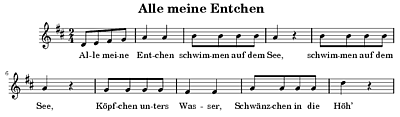

LilyPond
Dieser Artikel wurde für die folgenden Ubuntu-Versionen getestet:
Ubuntu 16.04 Xenial Xerus
Ubuntu 14.04 Trusty Tahr
Zum Verständnis dieses Artikels sind folgende Seiten hilfreich:
LilyPond 
 ist ein freies Notensatz-Programm für Linux, FreeBSD, MacOS X und Windows. Anders als Rosegarden ist LilyPond kein „What you see is what you get“-Programm, sondern die Noten werden ähnlich wie bei LaTeX in einer Textdatei gespeichert, die dann von LilyPond zum Beispiel in das PDF-Format übersetzt wird. Auch eine MIDI-Datei kann erzeugt werden.
ist ein freies Notensatz-Programm für Linux, FreeBSD, MacOS X und Windows. Anders als Rosegarden ist LilyPond kein „What you see is what you get“-Programm, sondern die Noten werden ähnlich wie bei LaTeX in einer Textdatei gespeichert, die dann von LilyPond zum Beispiel in das PDF-Format übersetzt wird. Auch eine MIDI-Datei kann erzeugt werden.
Ein speziell auf LilyPond zugeschnittener Texteditor ist Frescobaldi. Er bietet u.a. eine integrierte PDF-Vorschau, Zugriff auf die LilyPond-Dokumentation, einen eingebauten Midi-Player sowie das Einfügen einiger musikalischer Sonderzeichen per Mausklick.
Es existieren auch einige graphische Notensatzprogramme, mit denen die Noten per Maus (oder Tastatur, in seltenen Fällen auch Mikrophon) eingegeben werden und welche das Dokument schließlich ins LilyPond-Format (.ly) exportieren können (um es danach im Editor weiter zu bearbeiten). Diese Programme unterstützen jedoch nur einen Bruchteil der Funktionen, die LilyPond bietet, und sind deswegen nur bedingt zu empfehlen.
Canorus – verwendet Qt für die grafische Oberfläche, nutzt LilyPond für die Ausgabe als PDF
NtEd - Weiterentwicklung von Noteedit vom selben Entwickler
Denemo – verwendet das GTK+-Toolkit, unterstützt nur sehr wenige Funktionen
Rosegarden – Audio- und MIDI-Sequenzer mit umfangreicher Notenschreibfunktion
Installation¶
LilyPond liegt in den offiziellen Paketquellen vor. Folgendes Paket muss installiert [1] werden:
lilypond (universe)
 mit apturl
mit apturl
Paketliste zum Kopieren:
sudo apt-get install lilypond
sudo aptitude install lilypond
Manuell¶
Generell sollten die Paketen aus den offiziellen Paketquellen bevorzugt werden. In besonderen Fällen kann jedoch eine aktuelle Version vorteilhaft sein, wenn man zum Beispiel verschiedene Ubuntu-Versionen und damit auch verschiedene LilyPond-Versionen nutzt oder bei Konvertierungsproblemen aus anderen Formaten bzw. innerhalb von LilyPond.
Die Entwickler von LilyPond stellen ein Installationsprogramm als "Generisches Paket" bereit, da das Kompilieren aus dem Quelltext laut den Entwicklern kompliziert sein soll. Hat man das Installationsprogramm heruntergeladen, so kann LilyPond im Terminal [3] mit dem Befehl
sudo sh lilypond-X.Y.Z.linux-x86.sh
installiert werden. Hierbei bezeichnet X.Y.Z die entsprechende Versionsnummer. Sollte es beim Start des Installationsprogramms Probleme geben, muss man die Ausführrechte ändern, bevor man es erneut versucht:
chmod u+x lilypond-X.Y.Z.linux-x86.sh
Deinstallation¶
Das manuell installierte LilyPond kann mit dem Befehl
sudo /usr/local/bin/uninstall-lilypond
wieder gelöscht werden.
Benutzung¶
Die Programmnutzung ist ausführlich - auch auf Deutsch - dokumentiert . Bieten die vorhandenen Handbücher und Anleitungen nicht die gewünschten Informationen, so kann man in den Archiven der LilyPond-Mailingliste suchen oder sich auf der Liste anmelden und Fragen stellen. Eine Übersicht über die gebräuchlichsten Befehle (der Version 2.18) zeigt das LilyPond Cheat Sheet .
Hinweis:
Die Syntax von LilyPond ist zwischen den Major Releases (also z.B. zwischen 2.6 und 2.8) kleineren oder größeren Änderungen unterworfen. Deswegen sollte man darauf achten, die zur verwendeten Version passende Dokumentation zu verwenden. Die Konvertierung von Quelldateien zwischen zwei Versionen übernimmt das Hilfsprogramm convert-ly, das mit LilyPond ausgeliefert wird.
LilyPond-Dateien sind einfache Text-Dateien, ähnlich wie beim Textsatzsystem LaTeX, mit der Endung .ly. Auch die Syntax hat eine gewisse Ähnlichkeit zu LaTeX. Die Eingabe der Noten erfolgt sehr intuitiv.
Hat man ein Stück gesetzt, so kann dies mit
lilypond DATEINAME
in ein PDF-Dokument bzw. in eine MIDI-Datei exportiert werden. Auch andere Ausgabeformate wie PNG oder SVG sind möglich. Eine PNG-Datei wird zum Beispiel mit
lilypond --png DATEINAME
erzeugt.
Kile-Profil einrichten¶
Da LilyPond keine graphische Benutzeroberfläche bereitstellt, muss man, ähnlich wie bei LaTeX, von Zeit zu Zeit ein PDF-Dokument erstellen, um eventuelle Fehler ausfindig zu machen. Lädt man eine LilyPond-Datei, also eine Datei mit der Endung .ly, erkennt Kile automatisch den Typ und wählt den passenden Hervorhebungsmodus ("Syntax Highlighting"). Dieser Punkt ist im Menü unter "Extras -> Hervorhebungen -> Sonstige -> LilyPond" zu finden.
Kile bietet zwar eine eingebettete Konsole, aber man kann sich auch einen eigenen Menüpunkt erstellen, so dass man ein LilyPond-Dokument wie jedes andere TeX-Dokument auch, per Knopfdruck kompilieren kann. Dazu erstellt man unter "Einstellungen -> Kile einrichten -> Werkzeuge -> Erstellen" ein "Neues Werkzeug". Unter Befehl trägt man "lilypond" und unter Optionen "'%source'" oder für die Ausgabe als Bild die Option "--png '%source'" oder ein anderes gewünschtes Format ein. Im Reiter "Menü" lässt sich festlegen, wo der Menüpunkt unter "Erstellen" angelegt werden soll. Bei Bedarf kann man sich den Menüpunkt auch noch in eine der Werkzeugleisten legen.
Natürlich kann man auch mehrere Build- bzw. Quickbuild-Profile anlegen, am einfachsten orientiert man sich dafür an den vorhandenen Profilen.
Beispiele¶
Alle meine Entchen¶
Hier ein einfaches Beispiel:
1 2 3 4 5 6 7 8 9 10 11 12 13 14 15 16 | \header { title = "Alle meine Entchen" } \version "2.12.3" << \relative c' { \time 2/4 \key d \major d8[ e fis g] a4 a b8[ b b b] a4 r b8[ b b b] a4 r g8[ g g g] fis4 fis a8[ a a a] d4 r } \addlyrics { Al -- le mei -- ne Ent -- chen schwim -- men auf dem See, schwim -- men auf dem See, Köpf -- chen un -- ters Was -- ser, Schwänz -- chen in die Höh’ } >> |
Obiges Beispiel gibt folgendes Resultat:

Belle, qui tiens ma vie¶
Und noch ein komplexeres Beispiel mit Kommentaren, diese werden mit dem %-Zeichen eingeleitet.
1 2 3 4 5 6 7 8 9 10 11 12 13 14 15 16 17 18 19 20 21 22 23 24 25 26 27 28 29 30 31 32 33 34 35 36 37 38 39 40 41 42 43 44 45 46 47 48 49 50 51 52 53 54 55 56 57 58 59 60 61 62 63 64 65 66 67 68 69 70 71 72 73 74 75 76 77 78 79 80 81 82 83 84 85 86 87 88 89 90 91 92 93 94 95 96 97 98 99 100 101 102 103 104 105 106 107 108 109 110 111 112 | % Die Angabe der Versionsnummer stellt sicher, dass die Datei mit dem Programm convert-ly konvertiert werden kann. \version "2.12.3" % Um die Noten auf eine Seite einzupassen, kann die Größe der Systeme per Hand angepasst werden. #(set-global-staff-size 20) % Im sogenannten "header" kann man Überschriften u.Ä. setzen. \header { title = "Belle, qui tiens ma vie" composer = "Musik: Thoinot Arbeau (1520-1595)" arranger = "Aus \"Orchésgraphie\" (1589)" poet = "Text: 16. Jh." tagline = "- 1 -" } global = { \key f \major \time 2/2 } % Die Noten können als Variablen abgespeichert werden, damit man im sogenannten "score" Block auf sie zurückgreifen kann. % Somit können komplexere Dokumente gut strukturiert werden. SopranNoten = \relative c'' { \repeat volta 2 { \partial 2 g2 g4 fis g a bes2 bes4 d c bes bes a bes2 } \break bes2 \repeat volta 2 { a4 a g g fis2 d e8( f) g4 g fis } \alternative { { g2 bes } { g } } \bar "|." } AltNoten = \relative c' { \repeat volta 2 { \partial 2 d2 d4 d d f f2 f4 f e f g f f2 } f2 \repeat volta 2 { f4 f d es d2 f c4 d d d } \alternative { { b2 d } { d } } } TenorNoten = \relative c' { \repeat volta 2{ \partial 2 bes2 bes4 a bes c d2 d4 bes g d' c c d2 } d \repeat volta 2 {c4 d bes c a2 bes g4 bes a a} \alternative { { g2 bes } { g } } } BassNoten = \relative c' { \repeat volta 2 { \partial 2 g2 g4 d g f bes,2 bes4 bes c d es f bes,2 } bes'2 \repeat volta 2 { f4 d g c, d2 bes c4 g d' d } \alternative { { g,2 g' } { g, } } } stropheEins = \lyricmode { \set stanza = "1. " Bel -- le, qui tiens ma vi -- e cap -- ti -- ve dans tes yeux, viens tôt me se -- cou -- rir, ou me __ fau -- dra mou -- rir, viens rir. } stropheEinsWiederholung = \lyricmode { qui m'as l'â -- me ra -- vi -- e d'un sou -- riz gra -- ci -- eux, } stropheZwei = \lyricmode { \set stanza = "2. " Pour -- quoi fuis -- tu, mi -- gnar -- de, si je suis près de toy, car tes per -- fec -- ti -- ons chan -- gent __ mes ac -- ti -- ons, car ons. } stropheZweiWiederholung = \lyricmode { quand tex yeux je re -- gar -- de je me perds de -- dans moy, } stropheDrei = \lyricmode { \set stanza = "3. " Ap -- pro -- che donc ma bel -- le, ap -- pro -- che toy mon bien, pour mon mal ap -- pai -- ser, don -- ne __ moy un bai -- ser. pour ser. } stropheDreiWiederholung = \lyricmode { ne me sous plus re -- bel -- le puis -- que mon coeur est tien, } % Im score-Block wird die Gestaltung der Seite festgesetzt. \score { << \new ChoirStaff << \new Staff << \new Voice { \voiceOne << \global \SopranNoten >> } \new Voice { \voiceTwo << \global \AltNoten >> } \addlyrics { \stropheEins } \addlyrics { \stropheEinsWiederholung } \addlyrics { \stropheZwei } \addlyrics { \stropheZweiWiederholung } \addlyrics { \stropheDrei } \addlyrics { \stropheDreiWiederholung } >> \new Staff << \new Voice { \voiceOne << \global \clef bass \TenorNoten >> } \new Voice { \voiceTwo << \global \clef bass \BassNoten >> } \addlyrics { \stropheEins } \addlyrics { \stropheEinsWiederholung } >> >> >> } % Das Stück beinhaltet Wiederholungen, die von der Midi-Ausgabe nicht berücksichtigt werden. % Um die Wiederholungen in der Midi-Datei auszuspielen, gibt es die Option "unfoldRepeats" \score { \new ChoirStaff << \new Staff << \new Voice { \global \unfoldRepeats \SopranNoten } >> \new Staff << \new Voice { \global \unfoldRepeats \AltNoten } >> \new Staff << \new Voice { \global \unfoldRepeats \TenorNoten } >> \new Staff << \new Voice { \global \unfoldRepeats \BassNoten } >> >> \midi { \context { \Score tempoWholesPerMinute = #(ly:make-moment 120 4) } } } |
Obiges Beispiel ergibt eine Midi-Datei und ein PDF, das folgendermaßen aussieht:
Integration von LilyPond in LaTeX¶
Musiknoten und Textgestaltung können mit LaTeX miteinander verbunden werden.
Das TeX-Dokument¶
Als erstes wird mit einem der LaTeX-Editoren [4] ein TeX-Dokument erstellt und in einem beliebigen Verzeichnis gespeichert. In folgendem Beispiel wird die Datei mit dem LaTeX-Quelltext test.tex genannt und befindet sich im Verzeichnis /home/benutzer/lilypond. Das Beispiel soll zeigen zeigt, wie ein Textdokument aussehen kann, in welchem LilyPond Dokumente in LaTeX integriert sind. Es kann als Vorlage für eigene Versuche genutzt werden und ist bewusst einfach gehalten.
1 2 3 4 5 6 7 8 9 10 11 12 13 14 15 16 17 18 19 20 21 22 23 24 25 26 27 28 29 30 31 32 33 34 35 36 37 38 39 40 41 42 43 44 45 46 47 48 49 50 51 52 53 54 55 56 57 58 59 60 61 62 63 64 | \documentclass[a4paper]{article} \usepackage[utf8]{inputenc} \usepackage[ngerman]{babel} \usepackage[T1]{fontenc} \pagestyle{empty} \begin{document} \begin{huge} \textbf{Integration von LilyPond in \LaTeX{}} \end{huge}\ Hier kann nun alles stehen, was \LaTeX{} zu bieten hat: Anweisungen, Erklärungen, Bilder, usw. Immer dann, wenn Musiknoten zum Einsatz kommen, wird LilyPond folgendermaßen eingebettet:\ \vspace*{1cm} \begin{lilypond} \header { title = "Dies ist ein phantasieloses Stück" } << \relative c' { \time 4/4 \key c \major g'2 e g4 c g8 f e d e4 f g a g8 f e d c2 } >> \end{lilypond}\ \vspace*{1cm} Anschließend wird das \LaTeX{} Dokument weiter gestaltet. Natürlich können weitere Musiknoten integriert werden. In diesem Beispiel sind es reine Rhythmusnoten.\ \vspace*{1cm} \begin{lilypond} \header { title = "Dies ist irgendein Rhythmus" } << \new RhythmicStaff { \time 4/4 \override Staff.VerticalAxisGroup #'minimum-Y-extent = #'(-6 . 6) %vergrössert den Abstand! c4 c8 c c2 | r4 g r2 | c4 c c r | r2 c | c8 c c c c2 | r c | c4 r c2 | c8 c c2 c4 | r r2 c4 |c c8 c c c c c | c2 r | r r4 c | r c8 c c4 r | } >> \end{lilypond}\ Für weitere Möglichkeiten, betreffend Lilypond oder \LaTeX{} siehe Doku.\ Viel Spaß!\ Onkel Tom \end{document} |
Die Verarbeitung¶
Es gibt zwei Möglichkeiten, um aus dem LaTeX-Quelltext ein fertiges PDF-Dokument zu erstellen.
Bei der ersten Möglichkeit sind insgesamt fünf Schritte notwendig, um aus dem einfachen Textdokument ein fertiges PDF herzustellen [3]:
In das Verzeichnis wechseln, in welchem sich das Textdokument befindet:
cd /home/benutzer/lilypond
LilyPond:
lilypond-book --output=out/ test.tex
Damit wird ein Ordner erstellt, in dem alle notwendigen Daten für die weitere Verarbeitung entstehen. Die Noten selbst sind als .eps-Dateien abgespeichert. Diese könnten alternativ natürlich auch als Bildgrafik in ein LaTeX-Dokument eingebaut werden. Für die weitere Verarbeitung mit LaTeX wird die neue Datei test.tex verwendet.
In den neuen Order wechseln:
cd out
LaTeX:
latex test.tex
Es entsteht unter anderem ein DVI Dokument test.dvi.
Daraus wird zum Schluss ein PDF mit:
dvipdf test.dvi
Die zweite Möglichkeit besteht darin, das Programm pdflatex an Stelle von latex zu verwenden, um aus der LaTeX-Quelldatei ein fertiges Dokument zu erstellen. Im Gegensatz zu latex erstellt pdflatex nicht eine DVI-Datei, die danach in eine PDF-Datei umgewandelt werden muss, sondern erzeugt direkt eine PDF-Datei. Da man nun das Programm pdflatex verwendet, muss man dem lilypond-book-Befehl den zusätlichen Parameter -pdf hinzufügen. Insgesamt müssen folgende Befehle in dieser Reihenfolge ausgeführt werden:
In das Verzeichnis wechseln, in welchem sich das Textdokument befindet:
cd /home/benutzer/lilypond
LilyPond:
lilypond-book --output=out/ --pdf test.tex
In den neuen Order wechseln:
cd out
Das Programm
pdflatexausführen:pdflatex test.tex
Die fertige PDF-Datei befindet sich nun im Unterverzeichnis
out.
Eine andere Möglichkeit mit höchster Flexibilität sind Makefiles. Einige kennen diese Datei von der Installation einiger Programme aus dem Quellcode.
Im Grundverzeichnis wird die Datei Makefile mit folgendem Inhalt angelegt:
1 2 3 4 5 6 7 8 9 10 11 12 13 14 15 16 17 18 19 | SUBDIRS = out FILE = weihnachtslieder.tex FILEPDF = $(addsuffix .pdf, $(basename $(FILE) .tex)) lilypond: $(FILE) for dir in $(SUBDIRS); do \ lilypond-book --output=$$dir/ --pdf $(FILE); \ done pdf: $(FILE) for dir in $(SUBDIRS); do \ cd $$dir; pdflatex $(FILE); pdflatex $(FILE); cd ..; mv $$dir/$(FILEPDF) .; \ done lilypond-pdf: $(FILE) for dir in $(SUBDIRS); do \ lilypond-book --output=$$dir/ --pdf $(FILE); \ cd $$dir; pdflatex $(FILE); pdflatex $(FILE); cd ..; mv $$dir/$(FILEPDF) .; done |
Kurz zum Inhalt: Als SUBDIRS ist das gewünschte Unterverzeichnis (hier out) und als FILE die Hauptdatei angegeben.
Mit dem Befehl
make lilypond
werden die Dateien von LilyPond verarbeitet. Besonders interessant ist die Sache durch
make lilypond-pdf
da in einem ersten Schritt LilyPond die Dateien abarbeitet, gefolgt von 2x pdfLaTeX und anschließend einem Verschieben der generierten PDF ins Stammverzeichnis. Somit hat man die Zieldatei direkt vorliegen und braucht nicht erst umständlich in ein Unterverzeichnis zu wechseln.
Das Endergebnis¶
Das Produkt kann sich sehen lassen und liefert ein Dokument in hervorragender Druckqualität.
| Fertiges PDF |
Integration von LilyPond in XeTeX¶
Auch bei der Textgestaltung mit XeTeX, einer Alternative zu LaTeX, die Opentype-Schrftarten unterstützt, kann Lilypond in das betreffende Dokument eingebunden werden. Das Erstellen des Enddokumentes und somit der Befehlsaufruf im Terminal unterscheidet sich jedoch leicht zu der oben aufgeführten Variante mit LaTeX.
Das TeX-Dokument¶
Weil lilypond-book nicht mit XeTeX-eigenen Kopfdaten (eng. headers) umgehen kann, müssen diese mit Hilfe des Pakets ifxetex in einen If-else-Block integriert werden. Im folgenden Beispiel nennen wir die Datei mit dem XeTeX-Quelltext test2.tex. Sie befindet sich im Verzeichnis /home/benutzer/lilypond-xetex.
1 2 3 4 5 6 7 8 9 10 11 12 13 14 15 16 17 18 19 20 21 22 23 24 25 26 27 28 29 30 31 32 33 34 35 36 37 38 39 40 41 42 43 44 45 46 47 48 49 50 51 52 53 54 55 56 57 58 59 60 61 62 63 64 65 66 67 68 69 70 71 72 73 74 75 76 | %!TEX TS-program = Lilypond-XeLaTeX \documentclass[a4paper]{article} \usepackage{ifxetex} \ifxetex \usepackage{xunicode} \usepackage{fontspec} \usepackage{xltxtra} \usepackage[ngerman]{babel} \setmainfont[Mapping=tex-text,Ligatures=Common,Numbers={OldStyle, Proportional}]{Linux Libertine O} \defaultfontfeatures{Scale=MatchLowercase} \else \usepackage[utf8]{inputenc} \fi \pagestyle{empty} \begin{document} \begin{huge} \textbf{Integration von LilyPond in \LaTeX{}} \end{huge}\ Hier kann nun alles stehen, was \LaTeX{} zu bieten hat: Anweisungen, Erklärungen, Bilder, usw. Immer dann, wenn Musiknoten zum Einsatz kommen, wird LilyPond folgendermaßen eingebettet:\ \vspace*{1cm} \begin{lilypond} \header { title = "Dies ist ein phantasieloses Stück" } << \relative c' { \time 4/4 \key c \major g'2 e g4 c g8 f e d e4 f g a g8 f e d c2 } >> \end{lilypond}\ \vspace*{1cm} Anschließend wird das \LaTeX{} Dokument weiter gestaltet. Natürlich können weitere Musiknoten integriert werden. In diesem Beispiel sind es reine Rhythmusnoten.\ \vspace*{1cm} \begin{lilypond} \header { title = "Dies ist irgendein Rhythmus" } << \new RhythmicStaff { \time 4/4 \override Staff.VerticalAxisGroup #'minimum-Y-extent = #'(-6 . 6) %vergrössert den Abstand! c4 c8 c c2 | r4 g r2 | c4 c c r | r2 c | c8 c c c c2 | r c | c4 r c2 | c8 c c2 c4 | r r2 c4 |c c8 c c c c c | c2 r | r r4 c | r c8 c c4 r | } >> \end{lilypond}\ Für weitere Möglichkeiten, betreffend Lilypond oder \LaTeX{} siehe Doku.\ Viel Spaß!\ Onkel Tom \end{document} |
Die Verarbeitung¶
Folgende Befehle sind nun notwendig, um aus den beiden Quelldateien ein fertiges PDF-Dokument zu erstellen:
In das Verzeichnis wechseln, in welchem sich das Textdokument befindet:
cd /home/benutzer/lilypond-xetex
LilyPond:
lilypond-book --output=out/ --pdf test2.tex
In den neuen Order wechseln:
cd out
Das Programm
xelatexausführen:xelatex test2.tex
Die fertige PDF-Datei befindet sich nun im Unterverzeichnis
out.
(Aufgrund des If-Else-Blocks (ifxetex) kann man das Dokument an Stelle von xelatex auch mit latex oder pdflatex ausführen. Dabei verzichtet man jedoch auf die Vorteile von XeTeX.)
Links¶
Dokumentation
- der aktuellen stabilen VersionHandbuch
- für den Einstieg besonders empfohlen
Noten und Akkorde
 Programmübersicht
Programmübersicht
- Erstellt mit Inyoka
-
 2004 – 2017 ubuntuusers.de • Einige Rechte vorbehalten
2004 – 2017 ubuntuusers.de • Einige Rechte vorbehalten
Lizenz • Kontakt • Datenschutz • Impressum • Serverstatus -
Serverhousing gespendet von